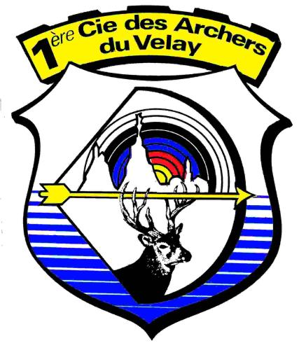
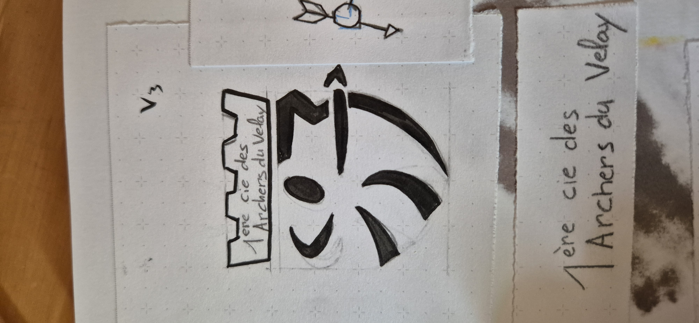
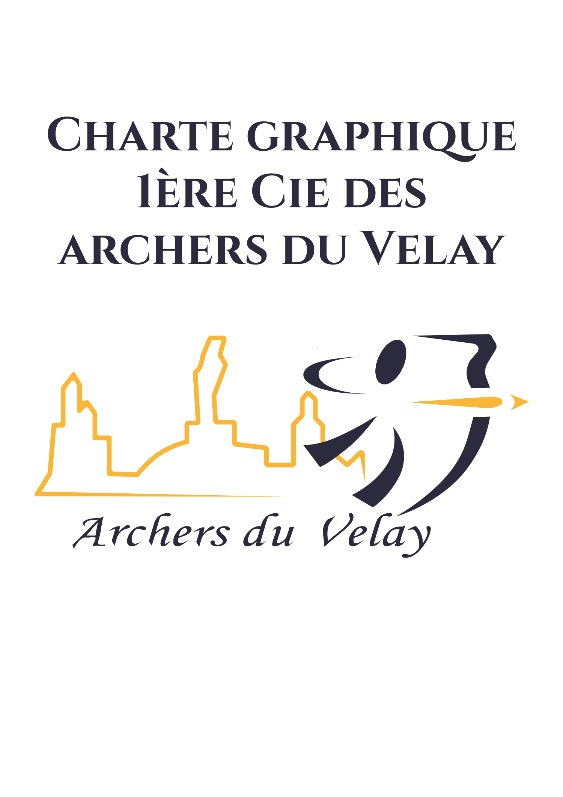
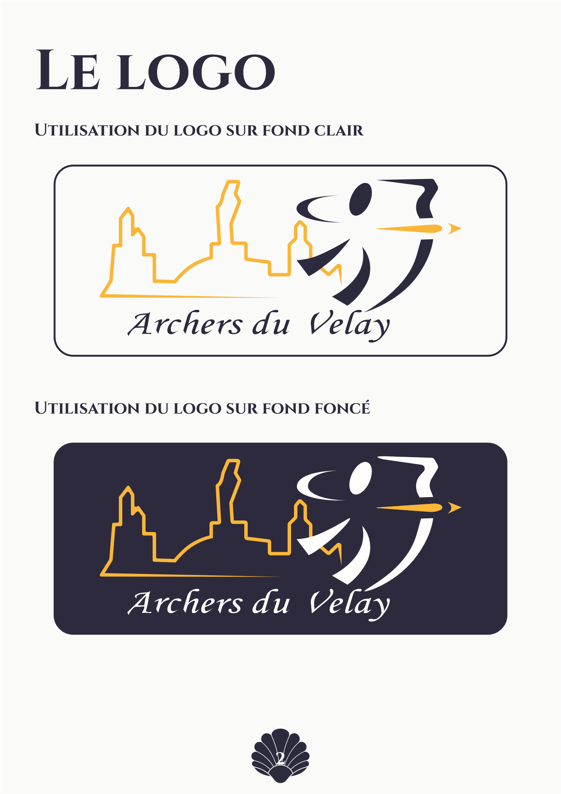
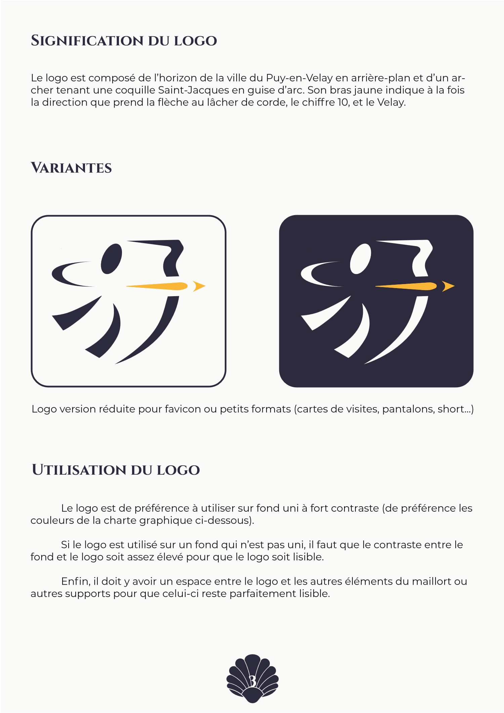
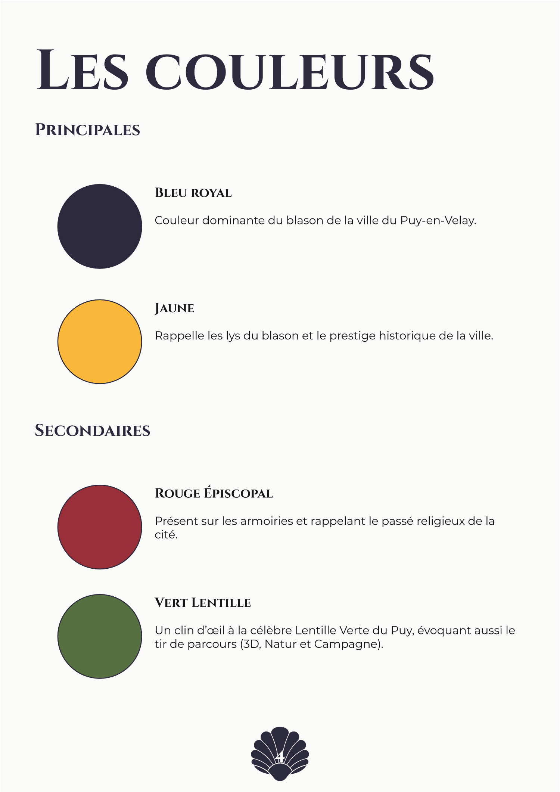
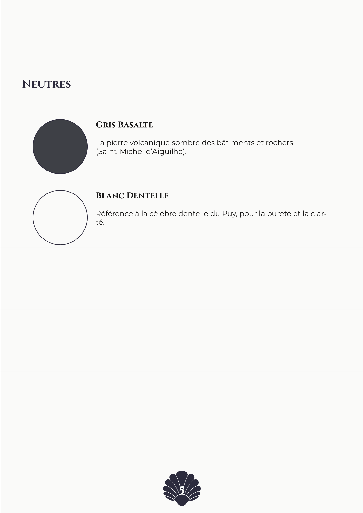
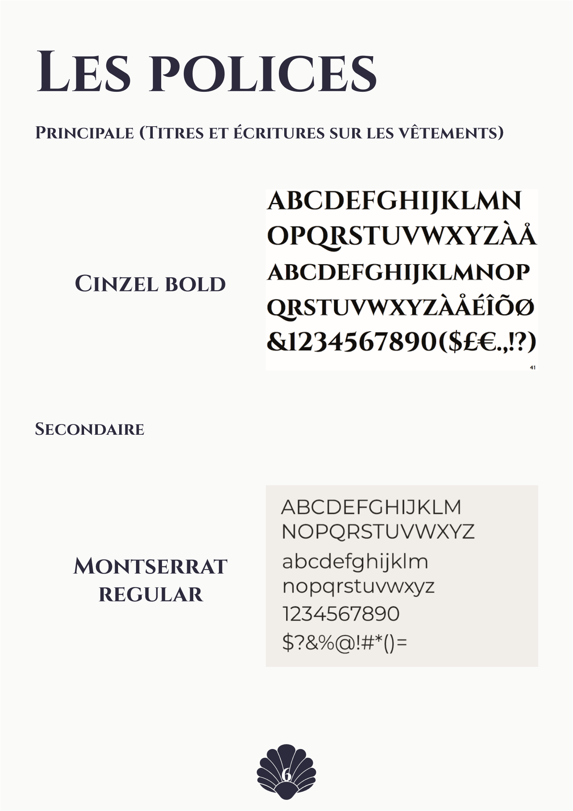
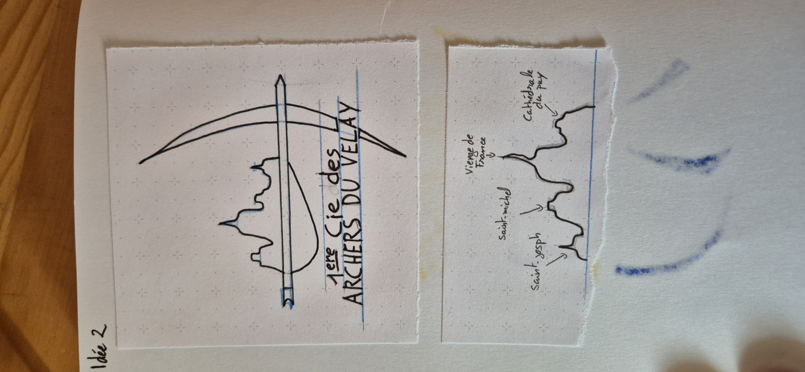

1re Cie des Archers du Velay
Moderniser l'identité visuelle du club historique du Puy-en-Velay tout en célébrant son patrimoine local : croquis préparatoires, création du logotype vectoriel et rédaction de la charte graphique complète (6 planches).

Palette Identitaire du Puy-en-Velay & Typographies
Chaque teinte de la charte graphique puise directement dans l'héritage héraldique, volcanique et naturel du Puy-en-Velay, tout en faisant écho aux 4 couleurs officielles du blason de tir à l'arc (Jaune, Rouge, Bleu, Noir/Blanc).

La coquille Saint-Jacques en guise d'arc, l'horizon du Puy en toile de fond
Après plusieurs planches de croquis sur carnet pour explorer les postures de tir et l'intégration des monuments, j'ai construit un logotype à triple niveau de lecture :
- La coquille Saint-Jacques comme arc : clin d'œil direct au départ de la Via Podiensis au Puy-en-Velay.
- La ligne d'horizon ponote : Cathédrale Notre-Dame, Statue de Notre-Dame de France et Rocher Saint-Michel d'Aiguilhe.
- Le bras jaune directeur : suggère la trajectoire de la flèche, le chiffre 10 et le V de Velay.

La charte graphique intégrale (cliquez pour agrandir)
Règles d'utilisation du logotype, proportions, palette chromatique identitaire et mises en situation.






